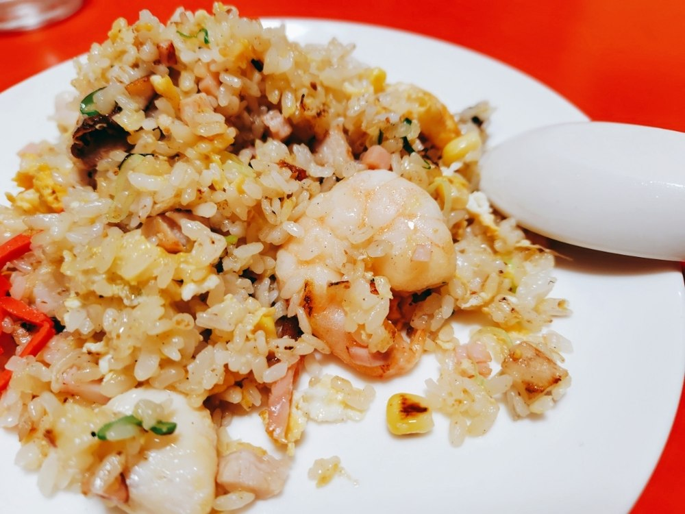
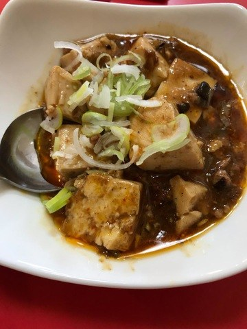
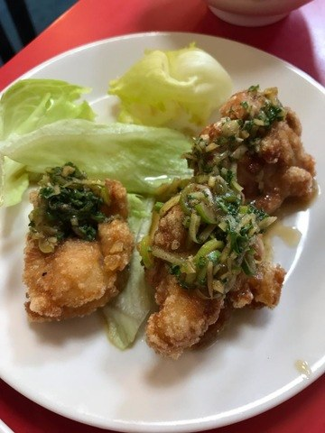
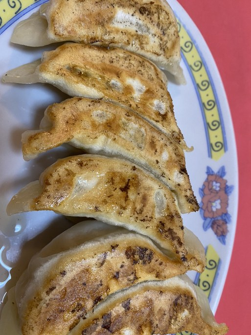

RICE / SIDE DISHES / DIM SUM / DRINKS
チャーハンやごはんもの、一品料理、点心、お飲みものをご案内しております。壁の短冊メニューは全部で九十品ほどございます。
チャーハンや中華丼などのごはんもの、エビチリやホイコーローといった一品料理、焼餃子や水餃子などの点心をご用意しております。
店の壁には、紙面にまだ載せきれていない短冊メニューが数十枚ございます。全部で九十品ほど。気になるものがございましたら、店頭でお尋ねください。
スープをお付けします。



店の壁には、このほかにも数十枚の短冊がございます。全部で九十品ほど。お品書きの紙面にはまだ載せきれておりませんので、店頭でご覧いただくのが一番早いです。

お通しをいただいております。